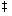

[XSI] ![[Option Start]](../images/opt-start.gif) get [-begkmnlLpst][-c cutoff][-i
list][-r SID][-x list] file...
get [-begkmnlLpst][-c cutoff][-i
list][-r SID][-x list] file... ![[Option End]](../images/opt-end.gif)
get - get a version of an SCCS file (DEVELOPMENT)
[XSI]
The get utility shall generate a text file from each named SCCS file according to the specifications given by its options.
The generated text shall normally be written into a file called the g-file whose name is derived from the SCCS filename by simply removing the leading "s." .
The get utility shall conform to the Base Definitions volume of IEEE Std 1003.1-2001, Section 12.2, Utility Syntax Guidelines.
The following options shall be supported:
- -r SID
- Indicate the SCCS Identification String (SID) of the version (delta) of an SCCS file to be retrieved. The table shows, for the most useful cases, what version of an SCCS file is retrieved (as well as the SID of the version to be eventually created by delta if the -e option is also used), as a function of the SID specified.
- -c cutoff
- Indicate the cutoff date-time, in the form:
YY[MM[DD[HH[MM[SS]]]]]For the YY component, values in the range [69,99] shall refer to years 1969 to 1999 inclusive, and values in the range [00,68] shall refer to years 2000 to 2068 inclusive.
- Note:
- It is expected that in a future version of IEEE Std 1003.1-2001 the default century inferred from a 2-digit year will change. (This would apply to all commands accepting a 2-digit year as input.)
No changes (deltas) to the SCCS file that were created after the specified cutoff date-time shall be included in the generated text file. Units omitted from the date-time default to their maximum possible values; for example, -c 7502 is equivalent to -c 750228235959.
Any number of non-numeric characters may separate the various 2-digit pieces of the cutoff date-time. This feature allows the user to specify a cutoff date in the form: -c "77/2/2 9:22:25".
- -e
- Indicate that the get is for the purpose of editing or making a change (delta) to the SCCS file via a subsequent use of delta. The -e option used in a get for a particular version (SID) of the SCCS file shall prevent further get commands from editing on the same SID until delta is executed or the j (joint edit) flag is set in the SCCS file. Concurrent use of get -e for different SIDs is always allowed.
If the g-file generated by get with a -e option is accidentally ruined in the process of editing, it may be regenerated by re-executing the get command with the -k option in place of the -e option.
SCCS file protection specified via the ceiling, floor, and authorized user list stored in the SCCS file shall be enforced when the -e option is used.
- -b
- Use with the -e option to indicate that the new delta should have an SID in a new branch as shown in the table below. This option shall be ignored if the b flag is not present in the file or if the retrieved delta is not a leaf delta. (A leaf delta is one that has no successors on the SCCS file tree.)
- Note:
- A branch delta may always be created from a non-leaf delta.
- -i list
- Indicate a list of deltas to be included (forced to be applied) in the creation of the generated file. The list has the following syntax:
<list> ::= <range> | <list> , <range> <range> ::= SID | SID - SIDSID, the SCCS Identification of a delta, may be in any form shown in the "SID Specified" column of the table in the EXTENDED DESCRIPTION section, except that the result of supplying a partial SID is unspecified. A diagnostic message shall be written if the first SID in the range is not an ancestor of the second SID in the range.
- -x list
- Indicate a list of deltas to be excluded (forced not to be applied) in the creation of the generated file. See the -i option for the list format.
- -k
- Suppress replacement of identification keywords (see below) in the retrieved text by their value. The -k option shall be implied by the -e option.
- -l
- Write a delta summary into an l-file.
- -L
- Write a delta summary to standard output. All informative output that normally is written to standard output shall be written to standard error instead, unless the -s option is used, in which case it shall be suppressed.
- -p
- Write the text retrieved from the SCCS file to the standard output. No g-file shall be created. All informative output that normally goes to the standard output shall go to standard error instead, unless the -s option is used, in which case it shall disappear.
- -s
- Suppress all informative output normally written to standard output. However, fatal error messages (which shall always be written to the standard error) shall remain unaffected.
- -m
- Precede each text line retrieved from the SCCS file by the SID of the delta that inserted the text line in the SCCS file. The format shall be:
"%s\t%s", <SID>, <text line>- -n
- Precede each generated text line with the %M% identification keyword value (see below). The format shall be:
"%s\t%s", <%M% value>, <text line>When both the -m and -n options are used, the <text line> shall be replaced by the -m option-generated format.
- -g
- Suppress the actual retrieval of text from the SCCS file. It is primarily used to generate an l-file, or to verify the existence of a particular SID.
- -t
- Use to access the most recently created (top) delta in a given release (for example, -r 1), or release and level (for example, -r 1.2).
The following operands shall be supported:
- file
- A pathname of an existing SCCS file or a directory. If file is a directory, the get utility shall behave as though each file in the directory were specified as a named file, except that non-SCCS files (last component of the pathname does not begin with s.) and unreadable files shall be silently ignored.
If exactly one file operand appears, and it is '-' , the standard input shall be read; each line of the standard input is taken to be the name of an SCCS file to be processed. Non-SCCS files and unreadable files shall be silently ignored.
The standard input shall be a text file used only if the file operand is specified as '-' . Each line of the text file shall be interpreted as an SCCS pathname.
The SCCS files shall be files of an unspecified format.
The following environment variables shall affect the execution of get:
- LANG
- Provide a default value for the internationalization variables that are unset or null. (See the Base Definitions volume of IEEE Std 1003.1-2001, Section 8.2, Internationalization Variables for the precedence of internationalization variables used to determine the values of locale categories.)
- LC_ALL
- If set to a non-empty string value, override the values of all the other internationalization variables.
- LC_CTYPE
- Determine the locale for the interpretation of sequences of bytes of text data as characters (for example, single-byte as opposed to multi-byte characters in arguments and input files).
- LC_MESSAGES
- Determine the locale that should be used to affect the format and contents of diagnostic messages written to standard error, and informative messages written to standard output (or standard error, if the -p option is used).
- NLSPATH
- Determine the location of message catalogs for the processing of LC_MESSAGES .
- TZ
- Determine the timezone in which the times and dates written in the SCCS file are evaluated. If the TZ variable is unset or NULL, an unspecified system default timezone is used.
Default.
For each file processed, get shall write to standard output the SID being accessed and the number of lines retrieved from the SCCS file, in the following format:
"%s\n%d lines\n", <SID>, <number of lines>If the -e option is used, the SID of the delta to be made shall appear after the SID accessed and before the number of lines generated, in the POSIX locale:
"%s\nnew delta %s\n%d lines\n", <SID accessed>, <SID to be made>, <number of lines>If there is more than one named file or if a directory or standard input is named, each pathname shall be written before each of the lines shown in one of the preceding formats:
"\n%s:\n", <pathname>If the -L option is used, a delta summary shall be written following the format specified below for l-files.
If the -i option is used, included deltas shall be listed following the notation, in the POSIX locale:
"Included:\n"If the -x option is used, excluded deltas shall be listed following the notation, in the POSIX locale:
"Excluded:\n"If the -p or -L options are specified, the standard output shall consist of the text retrieved from the SCCS file.
The standard error shall be used only for diagnostic messages, except if the -p or -L options are specified, it shall include all informative messages normally sent to standard output.
Several auxiliary files may be created by get. These files are known generically as the g-file, l-file, p-file, and z-file. The letter before the hyphen is called the tag. An auxiliary filename shall be formed from the SCCS filename: the application shall ensure that the last component of all SCCS filenames is of the form s. module-name; the auxiliary files shall be named by replacing the leading s with the tag. The g-file shall be an exception to this scheme: the g-file is named by removing the s. prefix. For example, for s.xyz.c, the auxiliary filenames would be xyz.c, l.xyz.c, p.xyz.c, and z.xyz.c, respectively.
The g-file, which contains the generated text, shall be created in the current directory (unless the -p option is used). A g-file shall be created in all cases, whether or not any lines of text were generated by the get. It shall be owned by the real user. If the -k option is used or implied, the g-file shall be writable by the owner only (read-only for everyone else); otherwise, it shall be read-only. Only the real user need have write permission in the current directory.
The l-file shall contain a table showing which deltas were applied in generating the retrieved text. The l-file shall be created in the current directory if the -l option is used; it shall be read-only and it is owned by the real user. Only the real user need have write permission in the current directory.
Lines in the l-file shall have the following format:
"%c%c%c%s\t%s
where the entries are:
- <code1>
- A <space> if the delta was applied; '*' otherwise.
- <code2>
- A <space> if the delta was applied or was not applied and ignored; '*' if the delta was not applied and was not ignored.
- <code3>
- A character indicating a special reason why the delta was or was not applied:
- I
- Included.
- X
- Excluded.
- C
- Cut off (by a -c option).
- <date-time>
- Date and time (using the format of the date utility's %y / %m / %d %T conversion specification format) of creation.
- <login>
- Login name of person who created delta.
The comments and MR data shall follow on subsequent lines, indented one <tab>. A blank line shall terminate each entry.
The p-file shall be used to pass information resulting from a get with a -e option along to delta. Its contents shall also be used to prevent a subsequent execution of get with a -e option for the same SID until delta is executed or the joint edit flag, j, is set in the SCCS file. The p-file shall be created in the directory containing the SCCS file and the application shall ensure that the effective user has write permission in that directory. It shall be writable by owner only, and owned by the effective user. Each line in the p-file shall have the following format:
"%swhere <i-value> uses the format "" if no -i option was specified, and shall use the format:
"if a -i option was specified and <x-value> uses the format "" if no -x option was specified, and shall use the format:
"if a -x option was specified. There can be an arbitrary number of lines in the p-file at any time; no two lines shall have the same new delta SID.
The z-file shall serve as a lock-out mechanism against simultaneous updates. Its contents shall be the binary process ID of the command (that is, get) that created it. The z-file shall be created in the directory containing the SCCS file for the duration of get. The same protection restrictions as those for the p-file shall apply for the z-file. The z-file shall be created read-only.
Determination of SCCS Identification String
SID*
-b Keyletter
Other
SID
SID of Delta
Specified
Used
Conditions
Retrieved
to be Created
none
no
R defaults to mR
mR.mL
mR.(mL+1)
none
yes
R defaults to mR
mR.mL
mR.mL.(mB+1).1
R
no
R > mR
mR.mL
R.1***
R
no
R = mR
mR.mL
mR.(mL+1)
R
yes
R > mR
mR.mL
mR.mL.(mB+1).1
R
yes
R = mR
mR.mL
mR.mL.(mB+1).1
R
-
R < mR and R does not exist
hR.mL**
hR.mL.(mB+1).1
R
-
Trunk successor in release > R and R exists
R.mL
R.mL.(mB+1).1
R.L
no
No trunk successor
R.L
R.(L+1)
R.L
yes
No trunk successor
R.L
R.L.(mB+1).1
R.L
-
Trunk successor in release >= R
R.L
R.L.(mB+1).1
R.L.B
no
No branch successor
R.L.B.mS
R.L.B.(mS+1)
R.L.B
yes
No branch successor
R.L.B.mS
R.L.(mB+1).1
R.L.B.S
no
No branch successor
R.L.B.S
R.L.B.(S+1)
R.L.B.S
yes
No branch successor
R.L.B.S
R.L.(mB+1).1
R.L.B.S
-
Branch successor
R.L.B.S
R.L.(mB+1).1
- *
- R, L, B, and S are the release, level, branch, and sequence components of the SID, respectively; m means maximum. Thus, for example, R.mL means "the maximum level number within release R''; R.L.(mB+1).1 means "the first sequence number on the new branch (that is, maximum branch number plus one) of level L within release R". Note that if the SID specified is of the form R.L, R.L.B, or R.L.B.S, each of the specified components shall exist.
- **
- hR is the highest existing release that is lower than the specified, nonexistent, release R.
- ***
- This is used to force creation of the first delta in a new release.
- The -b option is effective only if the b flag is present in the file. An entry of '-' means "irrelevant".
- This case applies if the d (default SID) flag is not present in the file. If the d flag is present in the file, then the SID obtained from the d flag is interpreted as if it had been specified on the command line. Thus, one of the other cases in this table applies.
System Date and Time
When a g-file is generated, the creation time of deltas in the SCCS file may be taken into account. If any of these times are apparently in the future, the behavior is unspecified.
Identification Keywords
Identifying information shall be inserted into the text retrieved from the SCCS file by replacing identification keywords with their value wherever they occur. The following keywords may be used in the text stored in an SCCS file:
- %M%
- Module name: either the value of the m flag in the file, or if absent, the name of the SCCS file with the leading s. removed.
- %I%
- SCCS identification (SID) (%R%.%L% or %R%.%L%.%B%.%S%) of the retrieved text.
- %R%
- Release.
- %L%
- Level.
- %B%
- Branch.
- %S%
- Sequence.
- %D%
- Current date (YY/MM/DD).
- %H%
- Current date (MM/DD/YY).
- %T%
- Current time (HH:MM:SS).
- %E%
- Date newest applied delta was created (YY/MM/DD).
- %G%
- Date newest applied delta was created (MM/DD/YY).
- %U%
- Time newest applied delta was created (HH:MM:SS).
- %Y%
- Module type: value of the t flag in the SCCS file.
- %F%
- SCCS filename.
- %P%
- SCCS absolute pathname.
- %Q%
- The value of the q flag in the file.
- %C%
- Current line number. This keyword is intended for identifying messages output by the program, such as "this should not have happened" type errors. It is not intended to be used on every line to provide sequence numbers.
- %Z%
- The four-character string "@(#)" recognizable by what.
- %W%
- A shorthand notation for constructing what strings:
%W%=%Z%%M%<tab>%I%- %A%
- Another shorthand notation for constructing what strings:
%A%=%Z%%Y%%M%%I%%Z%
The following exit values shall be returned:
- 0
- Successful completion.
- >0
- An error occurred.
Default.
Problems can arise if the system date and time have been modified (for example, put forward and then back again, or unsynchronized clocks across a network) and can also arise when different values of the TZ environment variable are used.
Problems of a similar nature can also arise for the operation of the delta utility, which compares the previous file body against the working file as part of its normal operation.
None.
None.
The -lp option may be withdrawn in a future version.
First released in Issue 2.
A correction is made to the first format string in STDOUT.
The interpretation of the YY component of the -c cutoff argument is noted.
The obsolescent SYNOPSIS is removed, removing the -lp option.
The normative text is reworded to avoid use of the term "must" for application requirements.
The Open Group Corrigendum U025/5 is applied, correcting text in the OPTIONS section.
The Open Group Corrigendum U048/1 is applied.
The Open Group Interpretation PIN4C.00014 is applied.
The Open Group Base Resolution bwg2001-007 is applied as follows:
The EXTENDED DESCRIPTION section is updated to make partial SID handling unspecified, reflecting common usage, and to clarify SID ranges.
New text is added to the EXTENDED DESCRIPTION and APPLICATION USAGE sections regarding how the system date and time may be taken into account.
The TZ environment variable is added to the ENVIRONMENT VARIABLES section.